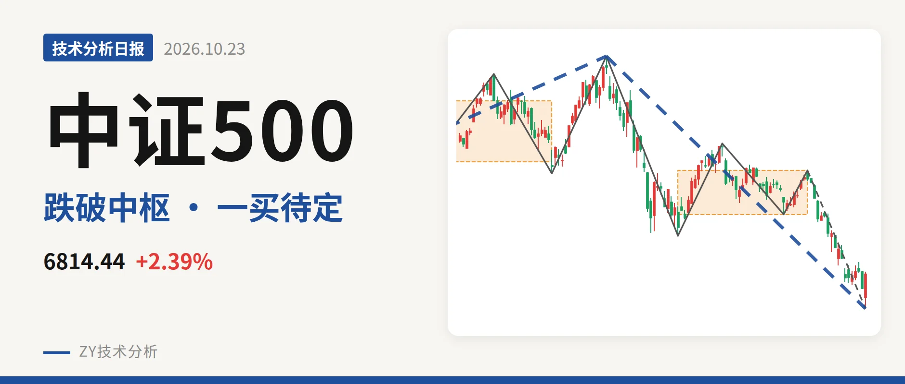
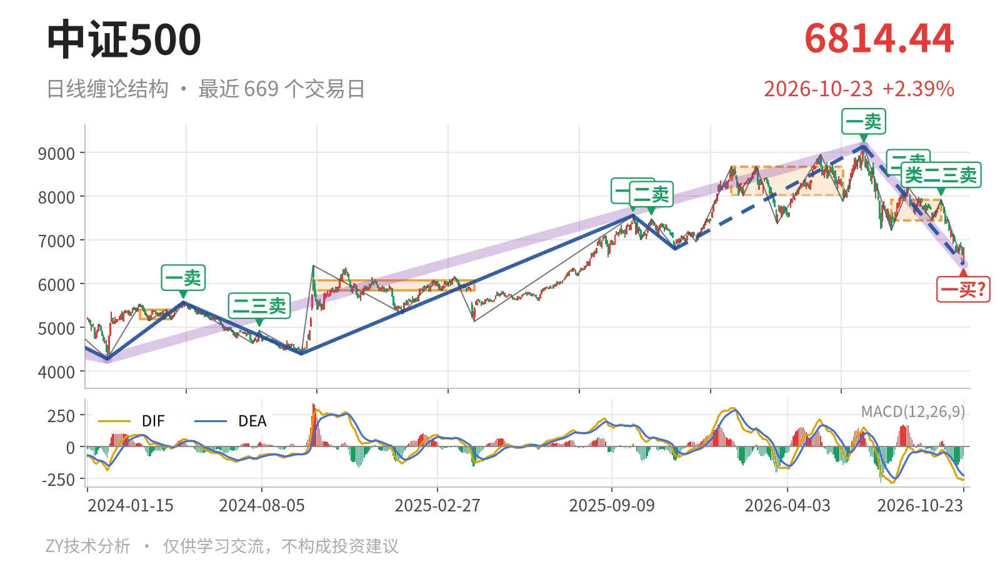
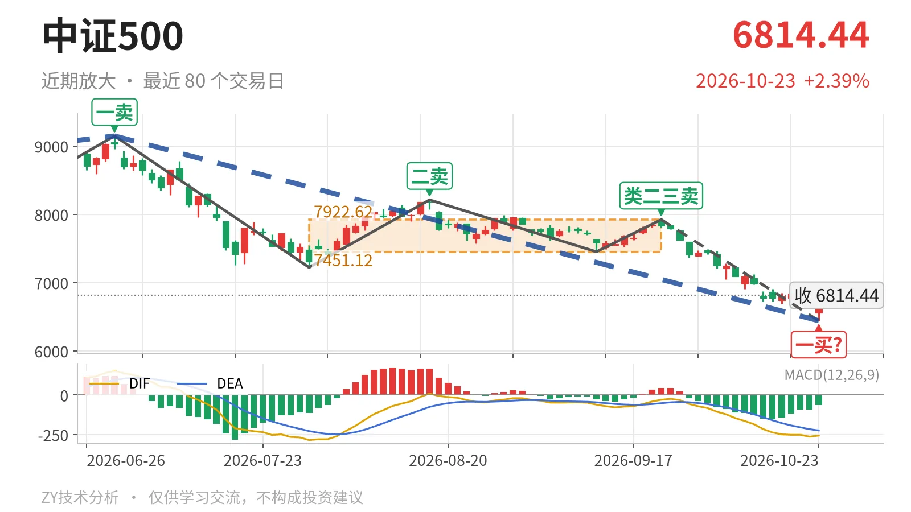

中证500｜跌破7451点中枢，6440点一买待定

最近日线中枢 7451.12—7922.62点，收盘位于中枢之下
一句话：跌破7451点，下跌笔未结束，暂定一买仍有变数
📉 走势结构：7月1日以来下跌段还在延续
当前处于7月1日以来的日线下跌线段里，这段下跌没有结束。2025年11月24日至2026年7月1日的上涨线段从6797.50点升至9147.56点，上涨约34.6%。7月1日转入下跌线段，到10月23日低点6440.29点，跌29.6%，内部已出现5笔。更大级别上，这是对2024年2月5日4281.24点至2026年7月1日9147.56点上涨段的修正。当前低点仍高于2024年2月5日低点。反弹结构上，7月1日一卖9147.56点、8月18日二卖8211.31点、9月22日类二三卖7922.62点，一个比一个低。反弹高度逐级下移，说明下跌段结构没有转折。

🧭 中枢位置：跌破最近中枢下沿，中枢明显下移
最新收盘6814.44点在7月30日至9月22日日线笔中枢（7451.12—7922.62点）下方，低于下沿约8.5%。这个最近中枢较1月26日至6月8日的中枢（8014.66—8671.35点）明显下移。价格已从中枢内波动转为中枢下方运行。线段级别上，2025年11月24日三买6797.50点位于下方。最新收盘6814.44点还在其上方，但盘中低点6440.29点已刺破该位。这个三买结构处于临界。
🎯 买卖点：10月23日一买只是暂定
10月23日6440.29点可以看作暂定的一买。它出现在9月22日至10月23日的日线下跌笔中，而这笔仍在延续。也就是说，该一买会随最后一笔是否继续向下变化，不能当作已经定格的买点。此前8月18日二卖8211.31点、9月22日类二三卖7922.62点已经出现。反弹高点一个比一个低。当前价格创7月1日以来新低，这个一买暂时只对应日线笔级别，不是线段级别的转折买点。

⚖️ 背驰：当前下跌笔与7月下跌笔相比尚未同步新低
当前最值得比较的是9月22日以来的下跌笔与7月1日至7月30日的下跌笔。7月1日至7月30日那一笔低点7221.95点，绿柱面积2687，DIF低点-285.2。当前这笔价格已压到6440.29点，创了新低，但绿柱面积1443、DIF低点-263.4均弱于前一笔。指标没有同步创新低，属于“新低不新弱”的雏形。由于当前下跌笔还在延续，面积和DIF仍会变化。因此这个背驰不能提前定格，只是暂定一买的观察基础。DIF仍在零轴之下，空头结构未变。
🔎 关键位置观察：反抽不回7451点则延续三卖结构
当前位置仍属弱势结构：价格在7451点下方、反弹卖点一个比一个低、下跌笔仍在延续。短期观察位看7451点附近与7687点附近。反抽若回不到7451点上方，日线笔级别构成中枢下移后的三卖结构，下跌段继续走低。若重新站上7451点并向7687点中轴附近回补，则更可能是中枢扩展而非继续下移。从当前收盘位置看，弱势结构还没有改变。
⚠️ 本文为基于公开行情数据的缠论技术结构记录，由程序自动计算并生成，仅供学习交流，不构成任何投资建议。市场有风险，投资需谨慎。